Тепловоз с электрической передачей – 3-я разработка Харьковского завода транспортного машиностроения.
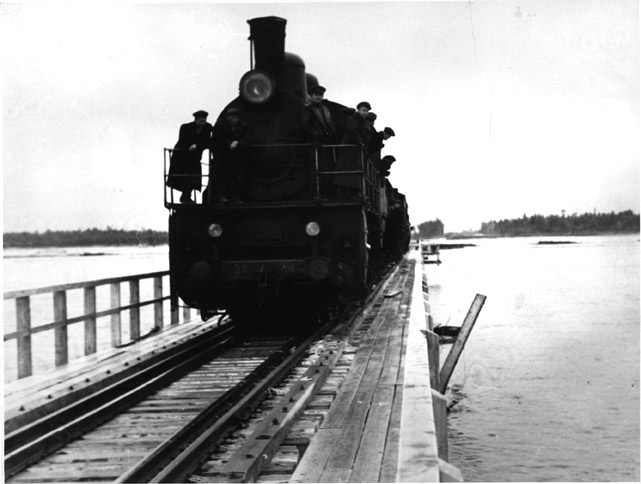
В 1953 году, когда советское правительство в спешном порядке сворачивало строительство «Трансполярной магистрали» (стройка № 501), на Харьковском заводе транспортного машиностроения построили первый опытный образец самого массового в будущем тепловоза Советского Союза.

Работой руководил главный конструктор локомотивостроительного завода Александр Александрович Кирнарский. Стране нужен был железнодорожный силач, способный заменить мощные паровозы серий ФД, Л, ЛВ и др. Серийный выпуск тепловозов серии ТЭ3 начался в 1956 году на Харьковском, Коломенском и Ворошиловградском (Луганском) заводах. А в 1973 году, когда на место будущего города Новый Уренгой пришёл первый автотракторный десант из Пангод, с конвейера сошёл последний тепловоз серии ТЭ3.

Всего за эти годы произвели 6797 таких локомотивов.Это позволило в короткие сроки завершить переход на тепло- и электровозную тягу на всей сети железных дорог страны. По этой причине тепловоз, который стоит перед вами – легенда Советского Союза. У железнодорожников эта машина из-за характерной раскраски кабины машиниста получила ласковое название «Ласточка».
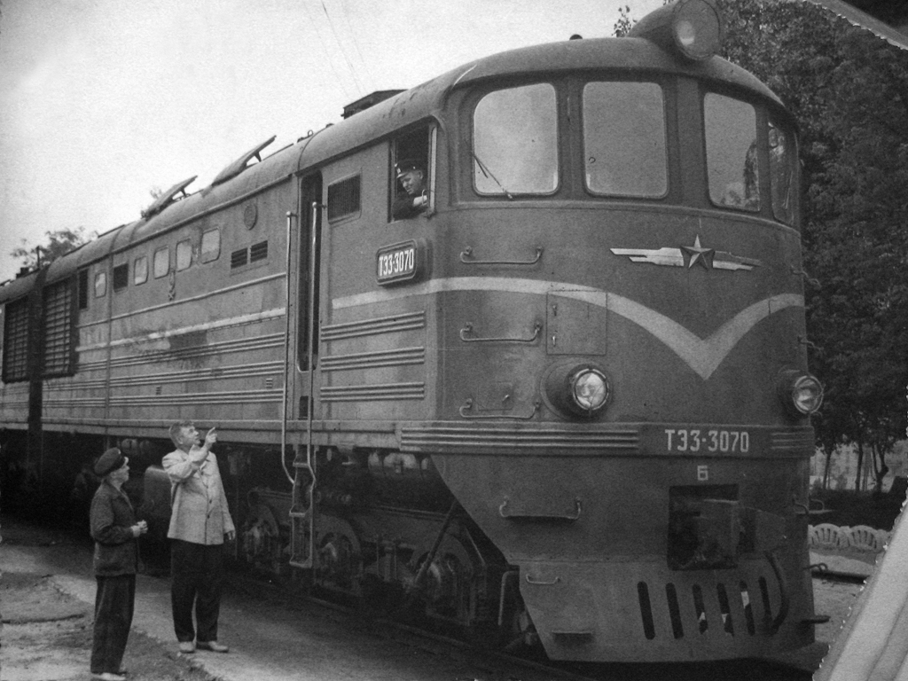
На Байкало-Амурской магистрали его называли «Дракон». Возможно потому, что в 1962 году на Даляньском локомотивостроительном заводе (Китайская Народная республика) завершили доработку тепловоза «Великий Дракон», основываясь на чертежах тепловоза ТЭ3, предоставленными Советским Союзом. А возможно, потому что у ТЭ3 имелся такой недостаток: при перегреве, дизельная установка использовала воду для охлаждения, выбрасывая огромные клубы пара.
Упрощённое изображение тепловоза ТЭ3 помещено на эмблему футбольного клуба «Локомотив» (Москва). Вот такой знаменитый тепловоз.
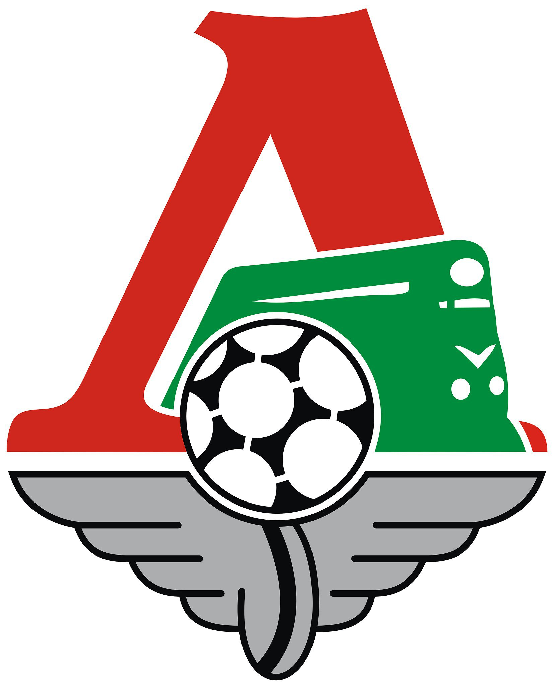
Интересно, что на участке Коротчаево-Надым сегодня действует последний в России тепловоз этой серии. Современная железнодорожная сеть Ямало-Ненецкого автономного округа сформировалась в эпоху «большого газа». Для обустройства месторождения Медвежье в 1969 году наладили широтную транспортную нить. Грузы по железной дороге с «большой земли» прибывали в Лабытнанги на берег Оби, потом рекой их перевозили в Надым. Отсюда тысячи тонн грузов приходилось доставлять к газовым кладовым по зимникам и с помощью авиации. В 1971 году Миннефтегазстрой СССР начал восстанавливать участок «Трансполярной магистрали»от станции Надым-Пристань до станции Пангоды – ближайшей к месторождению Медвежье, по оси трассы 501-й сталинской стройки.
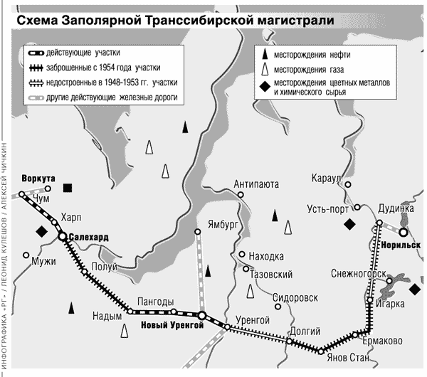
Первые грузы на месторождение через станцию Пангоды по железной дороге пошли в середине 1970-х годов.После начала разработки Уренгойского месторождения дорогу от Пангод продлили на восток и в 1978 году довели её до станции Ягельная (в настоящее время – район аэропорта г. Новый Уренгой). Так возник двухсоткилометровый железнодорожный широтный ход с запада на восток.
Трассу от Тюмени на север начали строить ещё в 1966 году. Работы выполнял коллектив Управления строительства «Абаканстройпуть»(с 1966 года — «Тюменстройпуть»). Руководил работами легендарный строитель железных дорог СССР Дмитрий Иванович Коротчаев.
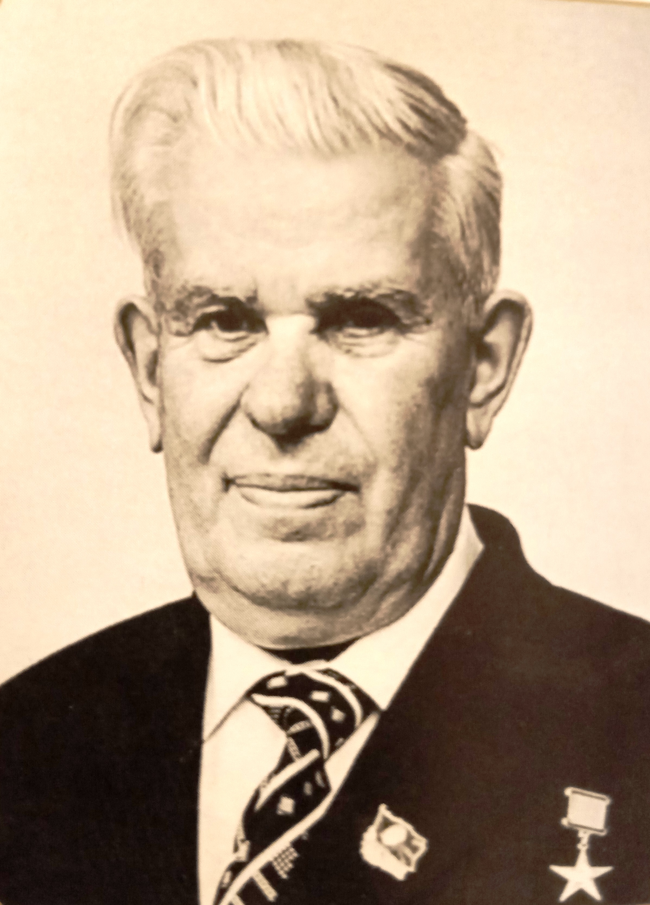
В марте 1969 года открылось железнодорожное сообщение Тюмень–Тобольск. К августу 1975 года сооружён мост через реку Обь – железная дорога дошла до Сургута. Строительство участка Сургут–Новый Уренгой объявили Всесоюзной ударной стройкой.
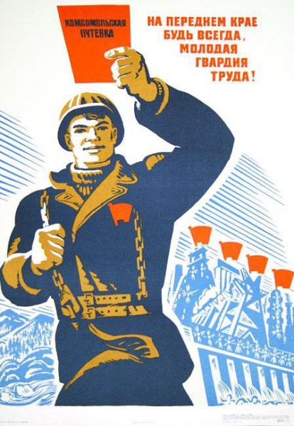
По призыву ЦК ВЛКСМ сюда прибыл комсомольский отряд имени П. Корчагина и молодёжный отряд имени 25-летия целины. Вскоре коллектив Всесоюзной ударной стройки насчитывал 27 300 транспортных строителей. В 50-ти комсомольских организациях на учёте состояли 5 тысяч комсомольцев, работали 124 комсомольско-молодёжных бригады. Первое звено рельсов дороги Сургут–Новый Уренгой уложили 35 бойцов легендарной комсомольско-молодёжной бригады управления «Тюменстройпуть» под руководством Героя Социалистического труда Виктора Васильевича Молозина.
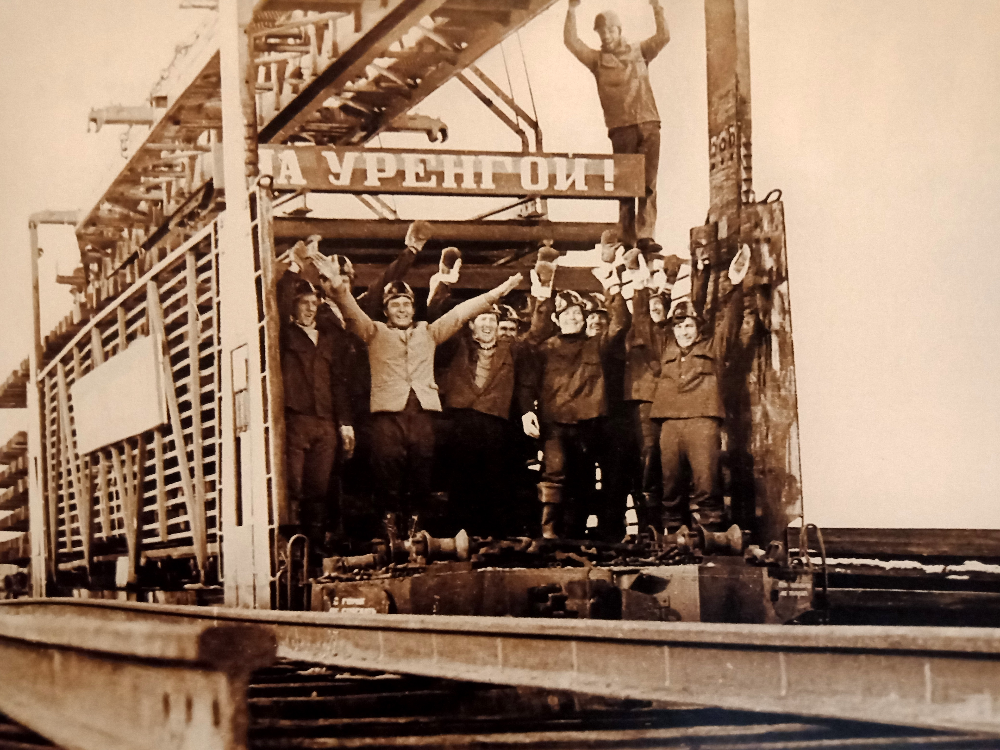
К 1976 году построили участок дороги Сургут–Нижневартовск. В конце мая 1978 года открыто движение поездов до станции Ноябрьск – первой станции на Ямале на линии Сургут–Новый Уренгой. К концу 1980 года укладка пути дошла до станции Уренгой, которая в 1982 году, как и посёлок, получили название Коротчаево.
Суровые условия тундры заставляли железнодорожных строителей тратить огромные усилия и ресурсы на строительство мостов, труб, переходов. В 1980-82 годах путейцам бригады В.В. Молозина пришлось возвести 60 искусственных сооружений на участке от станции Фарафонтьевская до станции Ягельная.

В апреле 1982 года укладка пути дошла до станции Фарафонтьевской, в начале сентября – до города Новый Уренгой.
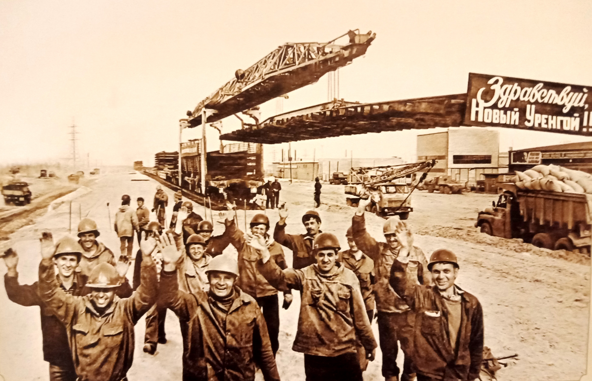
В начале сентября первый грузовой состав из 15 вагонов с картофелем для жителей Нового Уренгоя доставил тепловоз ТЭ3. Город получил надёжную связь с «большой землёй». По этому случаю состоялся торжественный митинг.
7 ноября 1982 года на станции Ягельная строители состыковали две железные дороги:отрезок Коротчаево–Новый Уренгой–Ягельная соединили с дорогой Надым–Пангоды–Ягельная. Так сомкнулись две ветки: широтная и меридиональная.
Железная дорога стала дорогой жизни для уренгойского топливно-энергетического комплекса страны. Благодаря ей северный 4*город начал активно строиться. В середине 1980-х годов на станцию Новый Уренгой прибывало до шести поездов в сутки; количество вагонов под разгрузку доходило до четырехсот. Везли всё: от металлоконструкций, оборудования и строительных материалов до продуктов питания и товаров первой необходимости. В среднем, в течение года перевозили около 6 миллионов тонн груза.
6 ноября 1985 года состоялось ещё одно большое железнодорожное историческое событие. В 7:30 по московскому времени, точно по расписанию, в Новый Уренгой прибыл первый пассажирский поезд №123 из Тюмени. На локомотиве ТЭМ2 был установлен портрет В. И. Ленина и транспарант: «Здравствуй, Новый Уренгой! Даёшь Ямбург!». Среди встречающих был Николай Кравченко (он даже выступил на митинге) – участник самого первого десанта на Уренгой.


После старта пассажирского движения в 1985 году на станции открыли билетную кассу. Первым начальником станции Новый Уренгой стал Владимир Матвеевич Самусёнок. К концу 1980-х открыли камеру хранения и багажное отделение. Под него оборудовали вагончики на территории станции. С ноября 1985 по январь 1966 до Нового Уренгоя курсировал один пассажирский состав из Тюмени.
Рост железнодорожной сети на Ямале не остановился. В конце 1980-х годов железная дорога протяжённостью более 200 километров связала Новый Уренгой и вахтовый посёлок Ямбург. В 1986-1988 годах ПСМО «Тюменстройпуть» сначала демонтировало временное железнодорожное полотно, а после построило заново участок от Ягельной до Пангод.
Не менее тяжёлым делом, чем строительство полярных железных дорог, стало поддержание этой инфраструктуры в порядке. Вечная мерзлота и связанное с ней сезонное движение грунтов, а также суровые климатические условия разрушали дорожные сооружения. После развала Советского союза , в период с 1996 по 2003 годы дорожники не могли обеспечить безопасное движение составов. В эти годы по жезнодорожному пути курсировали только грузовые составы.Ситуация изменилась в 2003 году, когда на коллегии Министерства путей сообщения в Новом Уренгое было подписано соглашение о создании ОАО «Ямальская железнодорожная компания».
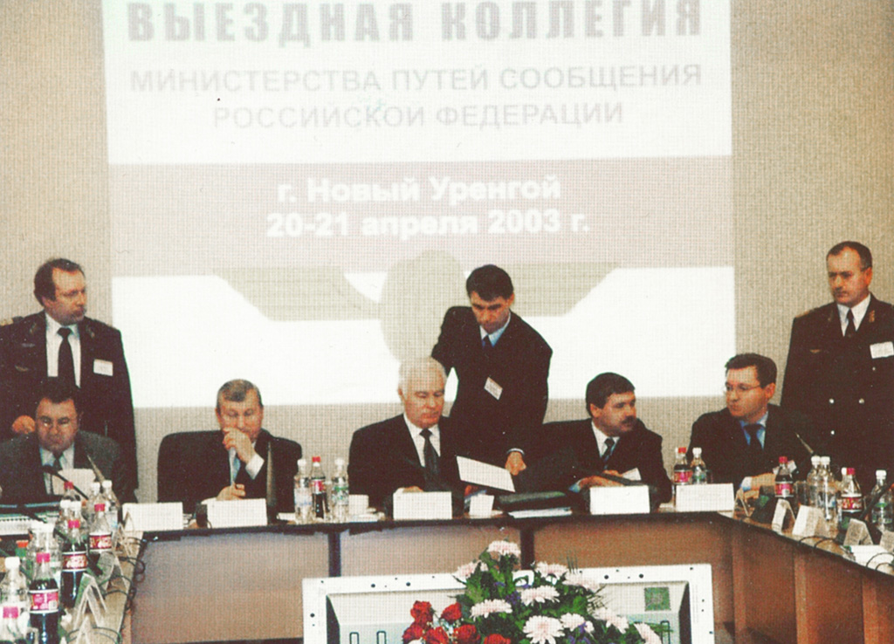
Уже через два месяца после этого было восстановлено движение пассажирских поездов от станции Коротчаево до города Новый Уренгой.

В 2012 году ОАО «Ямальская железнодорожная компания», к 30-летию с открытия железнодорожного сообщения от Тюмени до Нового Уренгоя, установила на привокзальной площади станции Новый Уренгой необычный памятный знак – тепловоз серии ТЭ3. До этого момента локомотив находился в надымском депо. ОАО «ЯЖДК» отреставрировала его и доставила в Новый Уренгой.
Здесь своими силами компания выполнила укладку временного вспомогательного пути для перемещения тепловоза к месту установки. Затем дорожники соорудили постамент, отремонтировали и покрасили локомотив, сделали памятные надписи на корпусе. И только после этого работники восстановительного поезда ЯЖДК подняли тепловоз с железнодорожных путей станции и установили его на вспомогательный путь. Все подготовительные работы состоялись в июле – августе 2012 года.
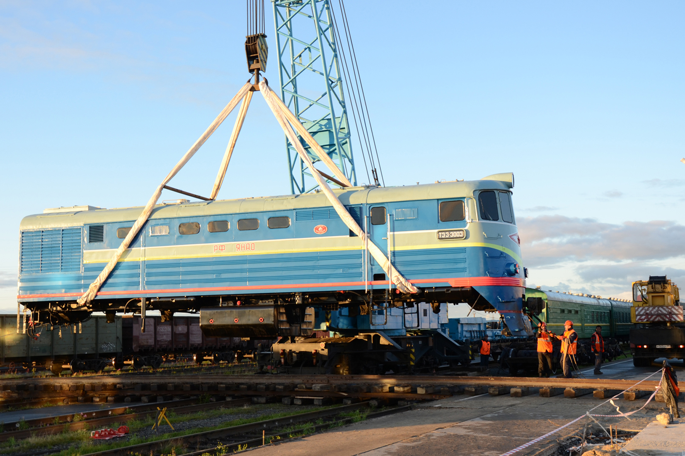
3 сентября 2012 года памятный знак в присутствии представителей администрации города, администрации и трудовых коллективов ОАО «ЯЖДК» торжественно открыли.
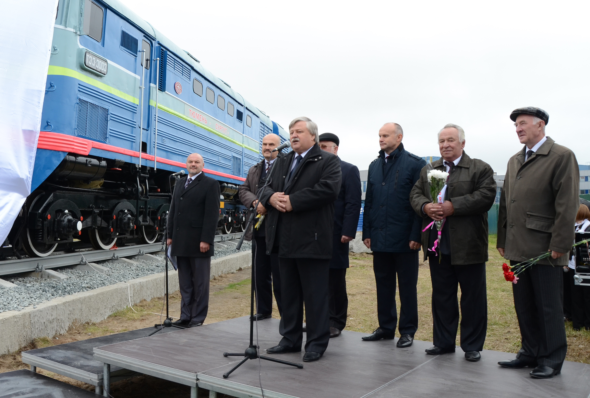
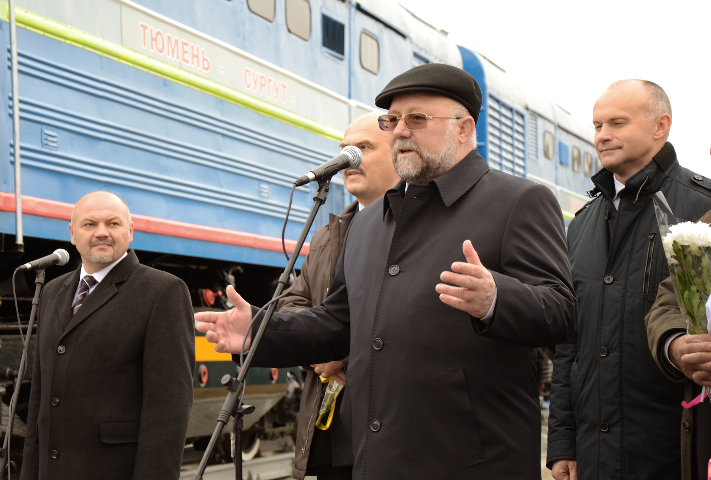
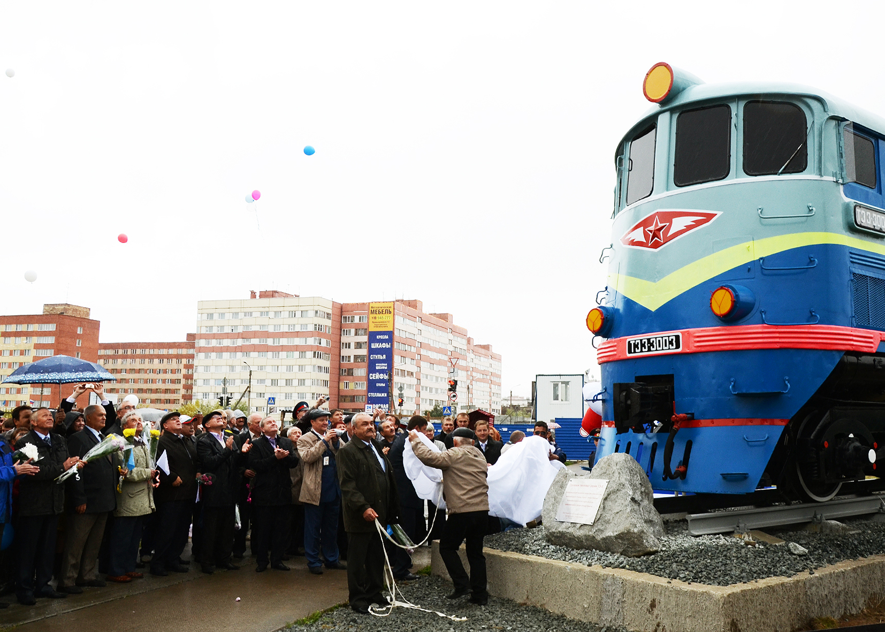
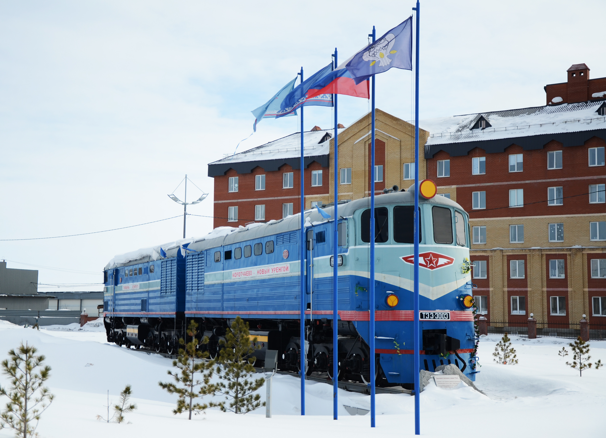
Ежегодно, в свой профессиональный праздник,работники ОАО «ЯЖДК» приходят к своему памятному знаку. Он полюбился и жителям, и гостям города.
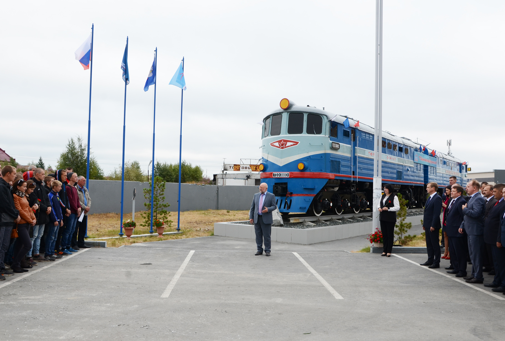
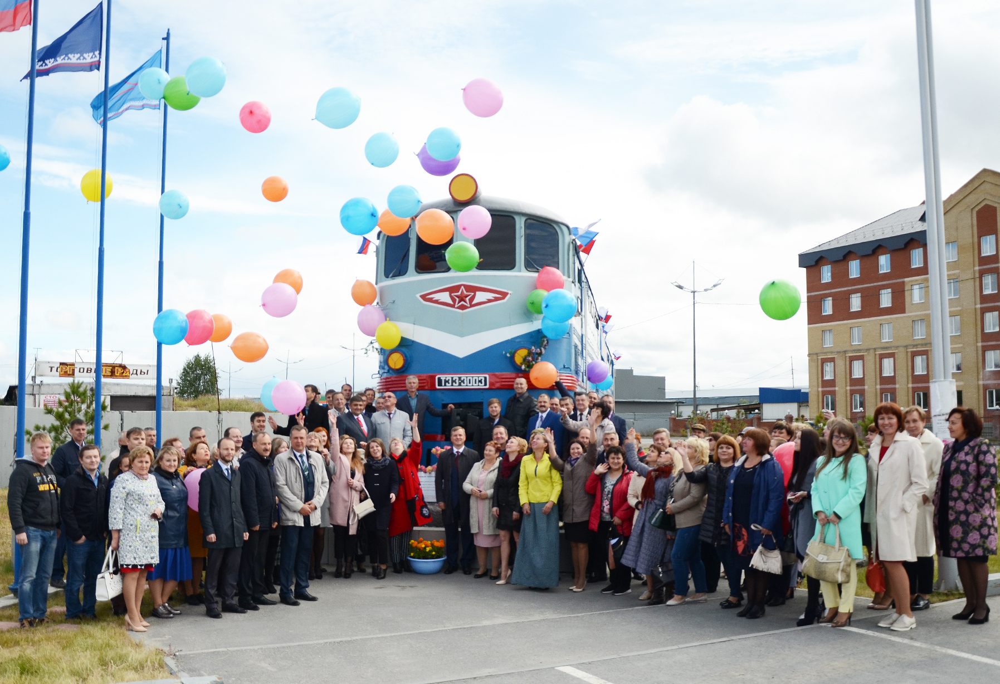
Сегодня станция Новый Уренгой является участковой станцией 2-го класса с большим объёмом маневровой работы, она работает на три направления:
Новый Уренгой — Коротчаево,
Новый Уренгой — Евояха,
Новый Уренгой — Пангоды — Надым — Пристань.
У станции три маневровых района и путевое развитие из 31 пути.
Подробно о деятельности ОАО «ЯЖДК» вы можете узнать на сайте этой компании https://yrw.ru/
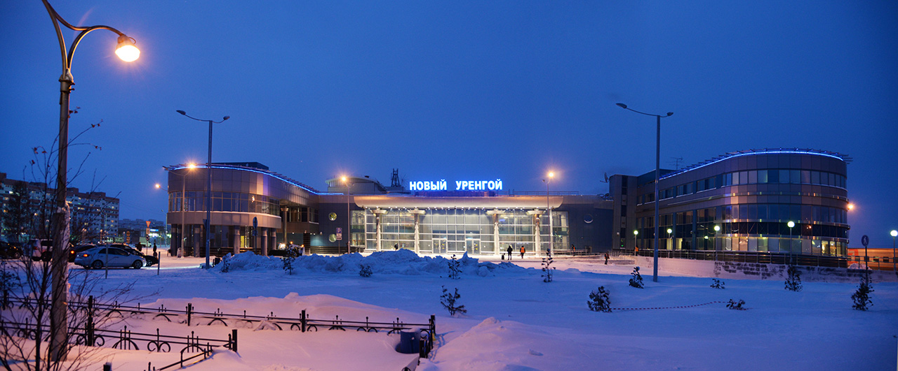
Благодарим за содействие проекту «Легенды Нового Уренгоя» Генерального директора ОАО «ЯЖДК» Якоба Соломоновича Крафта и руководителя пресс-центра ОАО «ЯЖДК» Ларису Владимировну Мартынычеву.